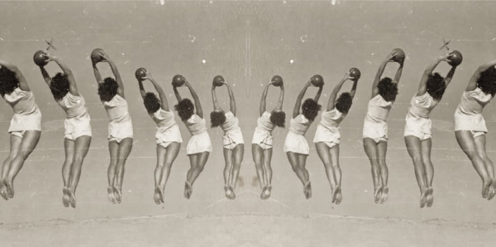

Digitalna fotomonografija Sokolskog društva u Novom Sadu
Fotografije, plakati i dokumenta kao vizuelna priča o ljudima, idejama i prostoru koji su oblikovali grad
Uvod
Vizuelna priča o 120 godina trajanja
Sokolsko društvo u Novom Sadu više od jednog veka predstavlja jednu od ključnih tačaka susreta sporta, kulture i društvenog života grada. Od svog osnivanja 1905. godine do danas, Sokolsko društvo ostavilo je dubok trag u oblikovanju identiteta Novog Sada, ne samo kroz fizičko vežbanje, već i kroz kulturne, umetničke i obrazovne aktivnosti.
Digitalna fotomonografija „Arhiv u slikama“ nastaje iz potrebe da se ovo bogato i slojevito nasleđe po prvi put objedini i učini dostupnim široj javnosti. Kroz fotografije, plakate i dokumenta, pred nama se otvara vizuelna priča o ljudima, idejama i prostorima koji su tokom 120 godina činili, i koji i danas čine, Sokolsko društvo jednim od ključnih nosilaca kulturnog i društvenog identiteta Novog Sada.
Ovaj arhiv nije samo pogled u prošlost – on je most između generacija i svedočanstvo o trajnim vrednostima koje i danas imaju svoje mesto u savremenom životu grada.
1905 – 1918
Osnivanje i rani period
Sokolsko društvo Novi Sad osnovano je 1905. godine u vremenu snažnih društvenih i nacionalnih previranja. Okupljajući mlade, intelektualce i građane, Sokoli su od samog početka imali širu misiju – kroz fizičko vežbanje, discipline, kulturu i zajedništvo, doprineti razvoju zdravog pojedinca i snažne zajednice.
Prve aktivnosti odvijale su se u skromnim uslovima, ali sa velikim entuzijazmom. Javne vežbe, nastupi i sokolske svečanosti brzo su postale prepoznatljiv deo gradskog života. Društvo nije bilo zatvoreno samo u sportske okvire – ono je predstavljalo mesto susreta, razmene ideja i kulturnog delovanja.
Uprkos izazovima koje je donelo ratno vreme, Sokolsko društvo je uspelo da očuva kontinuitet rada i postavi temelje koji će u narednim decenijama omogućiti njegov snažan razvoj i uticaj.
1918 – 1941
Između dva svetska rata
Zlatno doba sokolskog društva
Period između dva svetska rata predstavlja zlatno doba Sokolskog društva u Novom Sadu. Društvo se snažno razvija i postaje jedno od najaktivnijih sokolskih centara u tadašnjoj državi. Pored gimnastike, deluju brojne sekcije – kulturne, umetničke, muzičke, konjička sekcija, kao i orkestar fanfara, koji su nastupali na javnim manifestacijama i gradskim događajima.
U ovom periodu Sokolsko društvo ostavlja neizbrisiv trag u kulturi grada – ono je osnivač prvog lutkarskog pozorišta u Srbiji, iz kojeg je kasnije nastalo današnje Pozorište mladih. Time Sokoli postaju pioniri ne samo sporta, već i institucionalne kulture u Novom Sadu.
Izgradnja reprezentativnog Sokolskog doma 1936. godine dodatno učvršćuje ulogu društva u javnom životu grada. Podignuto uz podršku građana i članova, ovo zdanje simbolizuje vreme u kome su zajedništvo, kultura i fizička kultura činili nerazdvojnu celinu.
Posle drugog Svetskog rata
Nakon Drugog svetskog rata, rad Društva prolazi kroz organizacione i društvene promene, ali kontinuitet aktivnosti nikada nije u potpunosti prekinut. Sokolska tradicija nastavlja da živi kroz gimnastiku i fizičku kulturu, prilagođavajući se novim društvenim okolnostima.
Sokolski dom ostaje važno mesto okupljanja, a iz njegovih prostora nastaju i razvijaju se druga sportska i kulturna udruženja, čime se dodatno potvrđuje njegova uloga kao izvorišta gradskog sportskog i kulturnog života, a društvo uspeva da se prilagodi novim okolnostima bez potpunog gubitka identiteta.
Ove decenije predstavljaju vreme tihe istrajnosti, u kojem se čuva sećanje na sokolsku tradiciju i stvaraju uslovi za njenu kasniju obnovu.
Savremeni period
Početkom 21. veka dolazi do obnove sokolskog identiteta i ponovnog povezivanja sa izvornim vrednostima pokreta. Sokolsko društvo „Vojvodina“ ponovo se jasno pozicionira kao nosilac sportskih i kulturnih programa, oslanjajući se na bogato nasleđe, ali i na savremene potrebe zajednice.
Posebno mesto zauzima gimnastika, u kojoj Društvo ostvaruje vrhunske rezultate i godinama važi za jedan od najuspešnijih i najtrofejnijih gimnastičkih kolektiva u Srbiji.
Sokolsko društvo danas raspolaže jednom od najbolje opremljenih gimnastičkih sala u zemlji, uz visok nivo stručnog rada, trenerskog kadra i infrastrukturnih kapaciteta. Rezultati sportista, ali i kontinuiran rad sa mladima, potvrđuju snagu tradicije i savremene stručnosti.
Osnivanjem i razvojem Sokolskog kulturnog centra „Sokolski dom“, prostor doma dobija novu dinamiku. Pored sportskih aktivnosti, sve više se razvijaju kulturni, umetnički i edukativni programi, koji povezuju tradiciju i savremene prakse, kroz izložbe, programe, radionice i javna dešavanja.
U ovom periodu Sokolski dom ponovo postaje otvoren prostor za građane, mesto susreta različitih generacija, ideja i sadržaja. Savremeni programi potvrđuju da Sokolsko društvo nije relikt prošlosti, već živa tradicija koja se stalno prilagođava i razvija.
Sokolski slet se i danas organizuje jednom godišnje, kao simbol kontinuiteta i zajedništva.
Znameniti članovi Sokoloskog društva
Kroz istoriju, Sokolsko društvo u Novom Sadu okupljalo je istaknute pojedince koji su ostavili dubok trag u razvoju grada.
Marko Vilić, prvi predsednik Sokolskog društva u Novom Sadu 1905 – 1909.
Đorđe Tabaković, arhitekta i član Sokolskog društva, autor je zgrade Sokolskog doma, jednog od najznačajnijih arhitektonskih objekata Novog Sada, podignutog 1936. godine.
Ignjat Pavlas, pravnik, političar i istaknuti društveni radnik, takođe je bio član Sokolskog društva. Njegovo ime danas nosi ulica u kojoj se nalazi Sokolski dom, što dodatno svedoči o značaju Sokola u istoriji grada.
Pored njih, brojni sportisti, treneri, kulturni radnici i intelektualci vezali su svoj život i rad za Sokolsko društvo, gradeći njegov ugled i nasleđe.
Sokolski dom – zgrada i simbol
Zgrada Sokolskog doma, delo Đorđa Tabakovića, podignuta 1936. Godine, predstavlja jedan od arhitektonskih simbola Novog Sada i zvanično je proglašena spomenikom kulture. Od svog nastanka, zgrada nije bila samo prostor, već živo mesto susreta sporta, kulture i društva.
Sokolski dom je prva kulturna stanica grada – mesto gde su se održavala takmičenja, koncerti, predstave i gradske manifestacije, oblikujući kulturni pejzaž Novog Sada.
Kulturni uticaj
Sokolski kulturni centar „Sokolski dom“ danas ima važnu ulogu u savremenom kulturnom životu Novog Sada. Kroz raznovrsne programe, saradnje i javne događaje, nastavlja se tradicija otvaranja prostora za dijalog, stvaralaštvo i edukaciju.
Kontinuitet delovanja, vidljivost u javnosti i povezanost sa lokalnom zajednicom čine Sokolski dom prepoznatljivim mestom kulturne razmene. Njegova uloga nije samo u očuvanju tradicije, već i u njenom aktivnom tumačenju i prilagođavanju savremenom trenutku.
Na taj način, sokolske vrednosti ostaju prisutne i relevantne, potvrđujući da kultura i zajedništvo imaju trajnu snagu.
Značaj projekta
Projekat „Arhiv u slikama“ ima višestruki značaj. On doprinosi očuvanju kulturnog nasleđa, omogućava edukaciju građana i mladih, i jača svest o identitetu Novog Sada. Digitalizacijom arhivske građe, vredni materijali postaju dostupni svima, bez obzira na vreme i prostor.
Ovaj projekat povezuje sportsku, kulturnu i arhitektonsku tradiciju grada u jedinstvenu celinu, nudeći savremen način razumevanja prošlosti. Istovremeno, on predstavlja primer dobre prakse u digitalizaciji kulturne baštine i njenom uključivanju u savremeni kulturni život.
Projekat predstavlja legat ne samo Sokolskog društva, već i samog grada – svedočanstvo o ljudima, idejama i prostorima koji su Novi Sad učinili onim što jeste.
Zaključak
Digitalna fotomonografija „Arhiv u slikama“ nije samo dokument o prošlosti, već živo svedočanstvo o trajnosti jedne ideje. Kroz slike i priče, ona čuva sećanje na ljude, događaje i prostore koji su oblikovali Novi Sad.
Takođe ovo nije samo arhiv – već živa priča o prvih 120 godina trajanja, zajedništva i stvaranja. Sokolsko društvo u Novom Sadu danas stoji kao spona između bogate tradicije i savremenog grada, dokazujući da istorija nije prošlost, već temelj budućnosti.